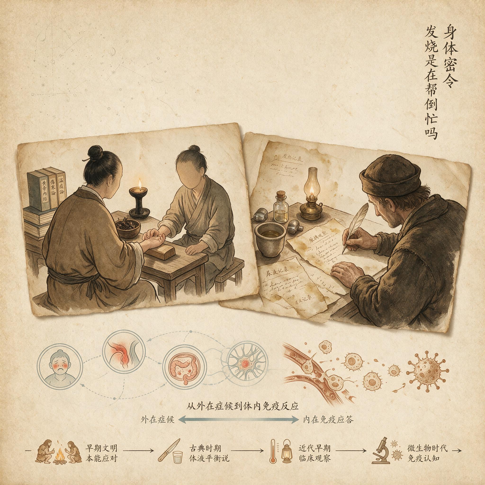

第 2 章
发烧是在帮倒忙吗
他记得那种冷。不是冬天站在风里的冷，不是皮肤表面泛起的凉意，而是一种从骨头缝里渗出来的、穿多少层衣服都压不住的寒战。他躺在床上，被子已经裹到了下巴，身体却像被什么巨大的力量摇晃着。

发烧是在帮倒忙吗：历史出版插图
AI 生成插图，非史实影像。
牙齿在轻微碰撞，手指尖冰凉，小腿肌肉一阵阵地发紧、松开、再发紧，仿佛有无数根细线从身体内部同时拽紧了每一束肌纤维。
外面是三十度的夏夜，额头上却还没有热起来。家里人说，这是要烧起来了。而他真正的困惑是：明明要发烧，为什么我会冷成这样？
这个问题，大多数人大概从未想过。发烧的这个前奏太普遍了，普遍到我们只把它当成一场疾病的序曲，一个需要忍耐的过渡阶段。
等体温计上的水银柱升到三十八度五，我们才会真正采取行动：找药片，灌温水，拿湿毛巾敷额头，或者直接把自己挪进急诊室。在我们的日常认知里，发烧就是疾病的同义词。
数字一升高，第一反应就是吃退烧药把它压下去。这几乎成了一种本能动作，不需要思考，也不需要理解。但这一章要讲清楚一个反直觉的事实：发烧不是病原体干的。
它不是细菌或病毒在你体内制造的混乱，不是入侵者强行把你的身体变成了一座失控的火炉。恰恰相反，发烧是你的大脑主动下令升温的。那些折磨你的寒意、颤抖、肌肉酸痛，不是防御系统崩溃的迹象，而是一场高度组织化的军事行动正在展开。你的身体正在消耗大量能量，把自己推向一个更不适合入侵者生存的温度区间。而你感受到的每一丝不适，都是它在执行这道命令时留下的必要摩擦。
要理解这件事，先得回到那个被误解最多的细节——寒颤。当我们的身体感到寒冷时，皮肤上的冷觉感受器会向下丘脑发送信号。下丘脑，这个深藏在大脑底部、只有几克重的小结构，一直在做着一件极其安静却极其重要的工作：维持核心体温。
它不太像一台简单的温度计，更像一个设定好刻度的恒温调节器。你也许在冬天用过那种老式暖气片：旋钮上标着一些数字，房间温度低于那个数字，锅炉就点火；高于那个数字，锅炉就熄火。身体也是类似的逻辑。下丘脑里存在一个“体温调定点”，大约维持在三十七摄氏度上下。
当核心体温低于这个点时，身体启动产热；高于这个点，身体开始散热。出汗、寻找阴凉、皮肤血管扩张，都是为了把多余的热量散出去；而打寒颤、皮肤血管收缩、缩起身体，则是为了把热量锁住、把温度拉回来。
现在设想一个场景：这位躺在床上的人，体内已经有某种病原体开始繁殖。免疫系统的前哨细胞在巡视时发现了它们。于是，一系列化学信号被释放出来。其中一种叫前列腺素E二的分子，像个骑快马的信使，穿过层层组织，抵达下丘脑。它带来的不是“入侵者来了”这样模糊的警报，而是一道非常具体的命令：把调高点拨上去。
于是，那台恒温调节器的旋钮被拧到了三十九度。好了，现在核心体温是三十七度，而身体认为你应该达到三十九度。下丘脑扫了一眼现状，作出判断：我太冷了。
接下来发生的就是你会感受到的那一切。皮肤血管收缩，血液被赶回核心区域，以防热量从体表流失。这就是为什么发烧前手脚会冰凉，为什么你会本能地蜷缩起来，为什么一件薄被子在夏天夜里显得不够。然后是骨骼肌。
下丘脑命令它们以极高的频率重复收缩、放松、收缩、放松。每一次收缩都在消耗能量，每一次收缩都在产生热量。你控制不住它们。它们像是一支被强征的劳动队，在短时间内以极高的效率把体温往上抬。
寒颤就是这样一道命令的执行过程。它的不舒服，恰恰说明它的严肃性——身体不是随便试试看能不能升一点温度，而是把几乎所有的外周热交换都关闭了，把肌肉动员到了极限。人在剧烈寒颤时，代谢率可以提高到平时的几倍。这是真正的消耗，不是错觉。
你感觉到的是冷。但你的身体实际在做的是升温。你感觉到的是痛苦。但你的身体认为这是必要的。
发烧从一开始就不是被动过程。如果是病原体干的，那它们为什么要先让你冷得发抖？为什么要让身体消耗巨量能量去颤抖？细菌和病毒并不需要一个发烫的宿主，它们中的许多反而在你的正常体温下繁殖得更好。真正需要高温的，是你自己的防御系统。
这个判断，已经被动物界里的许多证据所支持。我们先离开那张床，去看一块被太阳晒了一整天的岩石。
沙漠鬣蜥，一种生活在北美洲干旱地区的爬行动物，体温在很大程度上取决于环境温度。
如果它感染了病菌，它不会像我们这样寒颤，但它会做出一个非常特别的行为：主动爬到更热的岩石上去。实验研究人员曾经把感染了细菌的鬣蜥放进一个带有温度梯度的箱子里，温度从一端到另一端逐渐升高。健康的鬣蜥会选一个温度适中的地方待着，而那些被感染的个体，会明显偏向更热的区域，把体温拉高几度。它们没有发烧的感受，却有一种被写入神经系统的策略：一旦感染，就去找热。
如果把这些蜥蜴人为阻止在较低温度下，不让它们到达更热的岩石，它们的死亡率会显著升高。换句话说，行为性发热对它们来说不是奢侈品，而是生存的关键。它们在用石头代替寒颤，用太阳代替下丘脑。
类似的反应在更古老的动物中也能找到。鱼类感染病原体后会游向水温更高的区域。某些两栖动物也会在水体中选择更暖和的地方。
蜜蜂面对幼虫腐臭病，这种摧毁整个蜂群的致命感染时，会做出更惊人的集体行为：成百上千只工蜂聚集在巢脾表面，通过胸肌的高速振动产生热量，把蜂巢局部温度升高到足以抑制病原体繁殖的水平。它们中的一些可能会因此被高温杀死，但蜂群作为整体能活下来。
如果你在一个夏天接近一个正在对抗感染的蜂箱，你可以感受到那股从巢门里涌出的热浪。那不是机械故障。那是一场集体发热战役。
这解释了为什么发热反应几乎存在于动物界的各个分支，远在恒温动物出现之前就已经存在。它不是哺乳动物独有的发明，而是演化在数百万年的时间里反复保留下来的一个策略。
行为性发热和生理性发热之间并不存在一道不可逾越的界限。变温动物依赖外部热源来升温，恒温动物则进化出了内部的产热机制。你可以把寒颤看成是蜥蜴行为的“内化版”：不再需要寻找一块热石头，因为肌肉本身就是石头，就是火炉。
但这个信息也把另一件重要的事摆到了桌面上。如果升温抗感染是一个古老且有效的策略，为什么我们会急着把烧压下去？
为什么当一个孩子发烧时，半夜的家长会焦虑到坐立不安？为什么退烧药市场规模庞大到足以支撑起一整条生产线？为什么我们发明了冰袋、酒精擦浴、退热贴，甚至有人会用冷水直接浇在发烧的孩子身上？
要回答这一点，我们必须先理解身体为什么认为发烧值得这么做。下丘脑把调定点拨高三摄氏度，这看似只是一点小变化，但代价相当惊人。人类的身体是一个对温度极其敏感的系统，许多酶、蛋白质和细胞膜的结构都只在很窄的温度范围内高效工作。温度太高，这些分子会变形、失效，细胞功能会崩溃。因此，体温不能无限上升。
四十度以上，人体的很多组织开始承受真正的损害。四十一度、四十二度，危险就非常现实了。于是，身体在升温的同时，也不得不面对自己制造的内部压力。
加速的心率、沉重的呼吸、头痛、肌肉酸痛、食欲丧失、昏昏沉沉，这些都不是病毒在捣乱，而更像是整台机器在超负荷运行时发出的巨大轰鸣。如果把身体想成一座城市，发热就是城市在面临入侵时主动点燃了一些外围街区。
火能烧死一部分敌人，但也让城里的人呼吸困难，让物资运输变得缓慢，让居民不得不停下日常工作。城市没有别的选择，也许有，但这是它在一场可能致命的入侵面前能拿出的最强手段之一。它必须把资源从日常维护中抽调出来，投入防御。
从免疫系统的角度看，高温的确提供了真实的战场优势。一些病原体对温度变化较为敏感，它们在三十八度、三十九度时的复制速度会明显下降。这不是说高温能把它们完全杀死，但它能拖慢它们的扩张，给免疫细胞争取组织反攻的时间。升温会加速某些免疫细胞的代谢和迁移速度，让它们更快抵达感染现场。换句话说，你的防御部队在高温下跑得更快，敌人的增援部队却变慢了。这个差值，可能就是生与死之间的距离。
但这需要能量。很多能量。每次寒颤都是肌肉在燃烧燃料，每个小时的高温都在提高基础代谢的消耗。对于一个食物充足、感染后仍能获取营养的现代人来说，这些消耗可以被容忍。但请你把时间拨回几万年以前。
一个在热带草原上生活的狩猎采集者，在发烧时可能已经连续几天无法找到足够的食物。他的身体必须做一个残酷的算术：是把能量继续投入升温，还是保留一些资源熬过接下来可能出现的饥饿。
进化不会做有意识的决定。这里说“计算”只是一个比喻。在漫长的更新世，那些发烧反应更适度、能量管理更灵活的个体，可能在感染和饥饿的双重压力下活得稍微久一点，留下了更多的后代。于是，与发热有关的基因多态性在种群中逐渐积累。一个真实的“权衡”就这样被自然选择缓慢塑造出来：发烧带来的好处必须超过它带来的代价，这个反应才会被保留下来。
而这个“计算”发生在完全不同的环境背景下。在那个环境里，没有药片、没有医院、没有随时可以打开的水龙头和冰箱。感染更可能致命，饥饿却也更可能致命。温度升到多高、持续多久、何时收手，都要被严格控制。
现在这个人在现代卧室里发起烧来。他身边放着手机，手机上有搜索栏；冰箱里有冰镇饮料；药箱里有对乙酰氨基酚和布洛芬。
他不住在草原上，也不会因为三天吃不下东西而死。这个时候，他身体的防御程序仍然按照几万年前的旧账本在运行。它说：敌人来了，把温度抬高，抓紧一切能量，哪怕让人很难受，也要把这条命保下来。于是寒颤再次来临，调定点再次被拨上去。程序还是那道程序，但它运行的世界已经彻底变样了。
这就是为什么发烧不会因为你拥有现代药房而自动升级。它无法识别退烧药是什么东西。它不知道你已经准备好了电解质饮料，不知道医生就在半小时车程以外。它只记得那些数万年以前的条件：食物稀缺、天敌环伺、感染可能致命。于是它依然会启动，而且启动得毫不犹豫。
这引出了一个很难绕开的问题：我们到底该不该吃退烧药？我必须把这个问题轻声放下，因为这一章不该替你回答。发烧是一个进化塑造的适应性防御指令，它的不适感是执行这个指令的必然代价，这是我们可以确立的判断。但在具体一个人、一次感染、一个夜晚，是否要服用退烧药，需要考虑的因素远远超过进化逻辑。
年龄、基础疾病、舒适度、睡眠需求、感染类型，这些都会影响决定。有人说发烧需要“发透”，所以坚决不用药；也有人说体温一过三十八度五就必须服用药物。这两句话都没有足够的证据支撑它们成为一道绝对命令。
我们确实知道，适度的退烧药可以减少不适、恢复睡眠，这对于休息和恢复也有益。但在大多数发热性疾病中，退烧药并不缩短病程，有时甚至可能掩盖症状变化，让人错过了判断病情的时机。这里不是要建议你该怎么做，而是想说清楚，为什么这件事没有简单答案。
因为身体的逻辑是一套古老的统计模型，而我们每个人的处境都是具体的、新的、不同的。把古老模型输出的指令直接当成不可违抗的法则，并不比盲目压制它更聪明。
但我们需要回头看看那个躺在床上发抖的人。他一直被教育说，症状是需要消除的东西。冷了就升温，热了就降温，痛了就吃药，睡不着就找助眠药。整个现代医疗文化在很大程度上建立在这种逻辑上：把不适看作故障，把消除不适看作治疗。
可当他因为发烧而颤抖时，那些肌肉正在执行一道古老的命令。那道命令的核心不是折磨他，而是保护他。
古生物学家和免疫学家在一些很基础的层面达成了共识：发热适应性的证据，包括在变温动物中的行为性发热，也包括在恒温动物中寒颤与免疫反应的关联，都指向一个结论，即这更像是一道防御命令，而不是一次功能崩溃。我们的确还不知道这件事的全部面貌。比如，为什么不同的人对同一种感染会有很不一样的发热反应？为什么有些人在高烧时出现惊厥，而大多数人不会？为什么在极少数情况下，升高的体温似乎与更好的结局没有关系？
科学在这些问题上仍然应当保持坦然的不确定。我们知道那个大方向：发烧是大脑主动推高的，它和免疫防御之间存在深层关联。但我们还无法为每一个病例、每一种病原体、每一段体温曲线写出一本精确的操作手册。这种诚实的未知，恰恰是理解身体最迷人的部分之一。
它提醒我们，进化并不是一个完美的设计师。它没有蓝图，也没有最终方案。
它只是在每一代个体中反复筛选，让那些倾向于活下来的模式保留下来。这些模式可能很粗糙，可能带来巨大的痛苦，可能在新的环境里显得笨拙甚至危险。
但它们不是随机的噪音。它们是有历史、有逻辑、有代价的生存方案。发烧带来的不适，正是这种古老方案在执行时留下的重量。回到那个寒颤的人。他的牙齿还在轻微碰撞，他的手指尖还是一片冰凉。
但此时他不再只是感觉到冷。他还知道了一件别人没有告诉他、但身体一直在用肌肉语言大声宣告的事：他的大脑已经拨动了那个恒温调节器的旋钮，体温调定点上升了。他的皮肤血管收缩着，每一束骨骼肌都在重复紧张的指令。
不久之后，他会感到热。再之后，当感染受到控制，程序收到足够证据说敌人已经不再构成致命威胁，下丘脑才会把旋钮重新拨回来。他会出汗，身体在重新开放外周血管。那是解除警报的信号。
但那一夜，他感到的依然会是冷。那种冷现在有了解释，却没有因此变得舒服一些。这就是身体密令的诡异之处：它用痛苦来让你注意，但它的语言不是用来交流的。
它只是一遍又一遍地执行。它不在乎你是否理解，也不在乎你手中是否已经有了解药。几小时后，当他终于从寒颤中松脱出来，体温升到三十八度七，身体沉沉地陷进被单里时，他的额头上开始有水汽般的热量向外散出。他会昏睡过去，他的免疫系统会在高温中加速行军。也许他会吃一片药，也许他会让身体自己走完这一程。
但无论他怎么决定，他已经不在那个古老的计算器里了。那台计算器依然用着几万年前的参数，继续输出它对世界唯一的理解。它的理解固执、昂贵，有时甚至令人害怕。
但它在说一件事：当感染越过防线，身体愿意支付的代价，往往比我们自己想象的要大得多。深夜，当他再次醒过来，摸到自己的额头滚烫，而脚趾还是凉的时候，他会不由自主地把被子裹得更紧。他还不知道，这种来自内部的寒意，其实是一道跨越了亿万年的升温水闸。他只是在执行它。区别只在于，他现在多了一点迟疑。他不再那么确定，那个让他发抖、发热、挣扎在疲惫里的东西，究竟是他的敌人，还是他自己的哨兵。